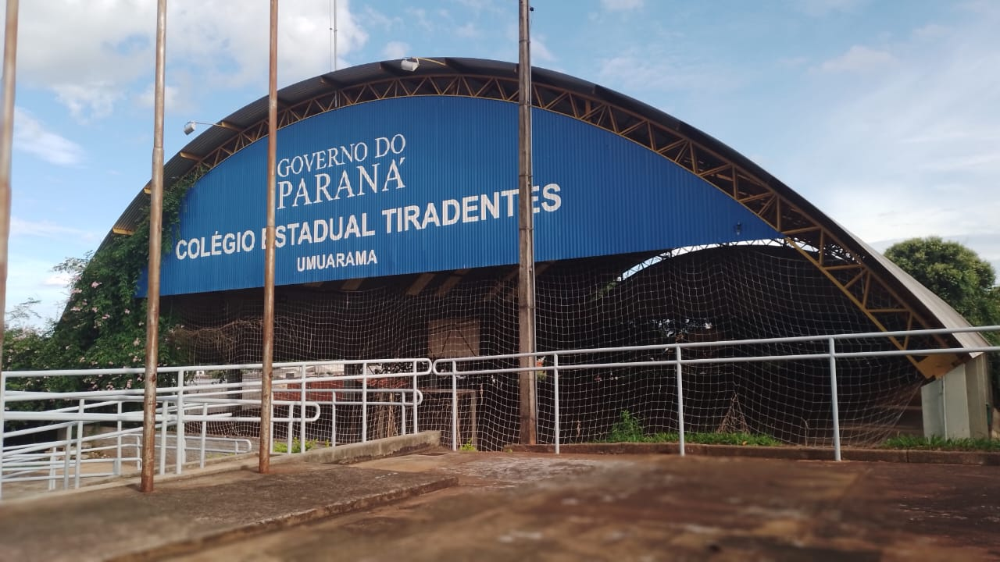
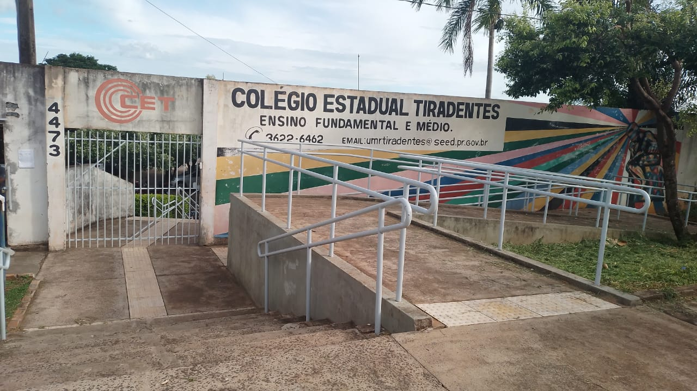
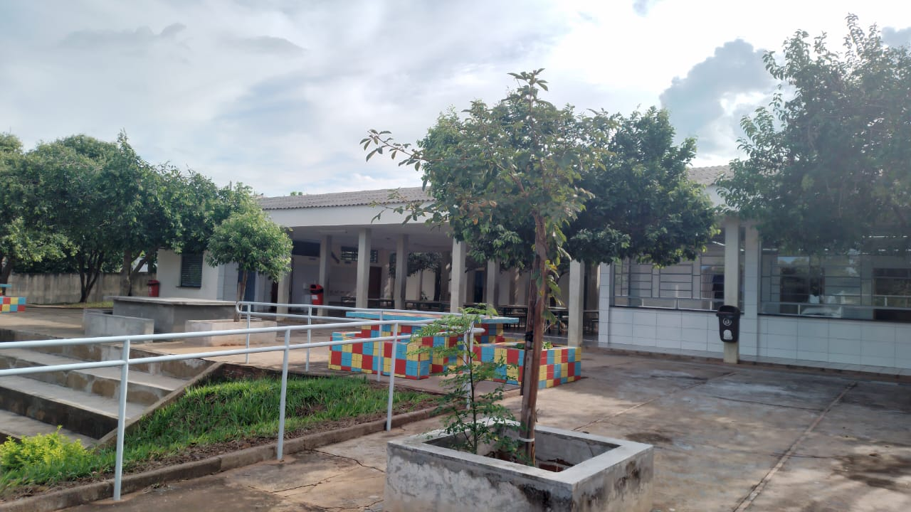

COLEGIO ESTADUAL TIRADENTES
FUNDADO EM 1977 A PARTIR DO DECRETO N°2993 DE 1977

Na jornada escolar diária, a escola assegura anualmente a duração de 200 dias letivos
e a carga horária mínima de 800 horas em cada série anual organizada em dois turnos diários: dois diurnos (matutino e vespertino) e integral.

No ensino fundamental, 6° ao 9° ano e no ensino médio, as aulas no diurno, são ministradas em 50 minutos, distribuídas conforme a matris curricular, perfazendo um total de 25 horas/aulas semanais .
No ensino médio do curso técnico em administração no período diurno, as aulas são ministradas em 50 minutos, distribuídas conforme matriz curricular, perfazendo um total de 30 horas/aulas semanais
No ensino médio integral no período diurno, as aulas são ministradas em 50 minutos, distribuídas conforme matriz curricular , perfazendo um total de 45 horas/aula semanais
